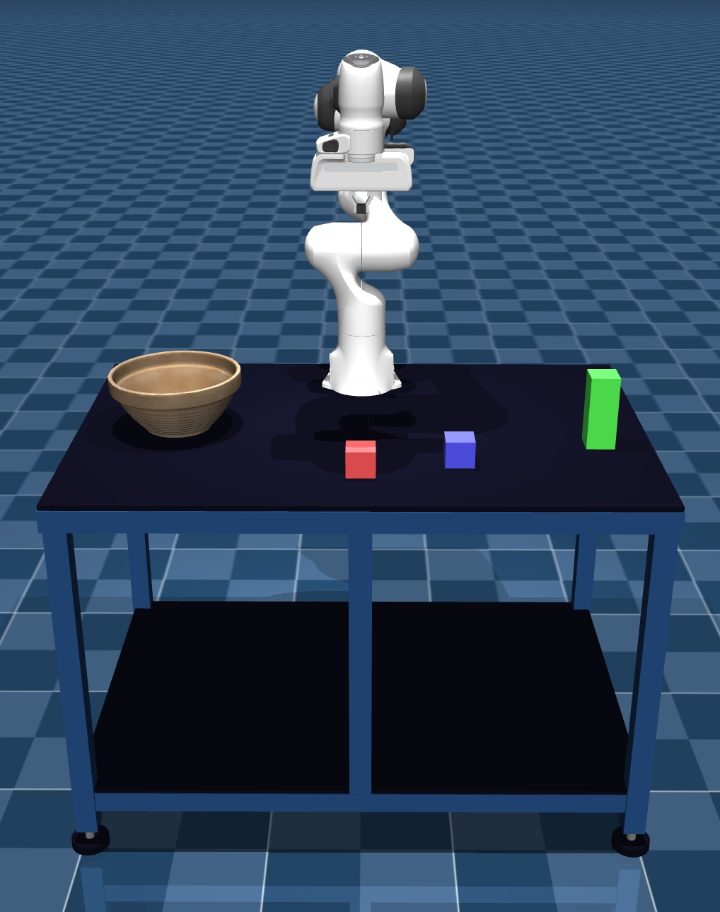

GraspBench
Overview
GraspBench is an analysis project comparing different grasping algorithms across different robotic arms. The benchmark studies how grasp generation methods behave when moved from algorithmic prediction to execution-aware evaluation on robot platforms.
Benchmark Scope
- Compares grasp generation algorithms including GGCNN, GR-ConvNet, ContactGraspNet, AnyGrasp, and GraspGen.
- Evaluates cross-robot performance across platforms such as Unitree Z1 Pro, FR3, KUKA iiwa, Aubo-i5, and AgileX Piper.
- Focuses on execution-aware metrics rather than prediction-only evaluation.
- Analyzes robustness, transferability, and practical deployment behavior for real-world manipulation.

Physical robot execution used for grasping evaluation.

Manipulation scene for execution-aware grasp analysis.